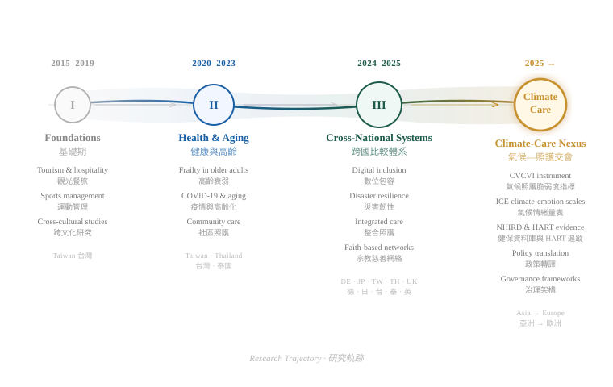

PublicationNov 2026
An independent research unit
Climate Care Lab
關於我
About
Appointments
Current · 2026–
Postdoctoral Fellow
College of Population Studies
Chulalongkorn University · Bangkok, Thailand
Sep–Dec 2026
Visiting Researcher
Chair of Social Structure & Sociology of Ageing Societies
TU Dortmund University · Dortmund, Germany
2025–
Visiting Fellow
Geller Institute of Ageing and Memory
University of West London · London, UK
Education
2024–25
2025
2023
2019
2018
2015
Biography
語言與區域經驗
Languages
研究主題
Research Interests

研究四大主軸
Four Research Pillars
著作列表
Publications
Accepted for Publication
Comparative barriers and enablers in ASEAN-Plus Three long-term care systems: insights from the 2025 Regional Policy Dialogue on Equitable Active Ageing
Enhancing training effectiveness through graphic recording: mitigating information overload in human resource development
Published Journal Articles
Transferable enablers for community-based integrated care systems in ageing societies: a qualitative comparative analysis of Germany, Japan and Thailand
Advancing people-centred community-based integrated care for frail older adults: a cross-national assessment using WHO's long-term care framework
Gendered hybridity paradox in community-based long-term care: care work, social reproduction and welfare governance in the US and Thailand
Trusted agents as knowledge translation mechanisms in flood disaster warning: community-embedded intermediaries in Hualien, Taiwan
Beyond the diamond: social support, masculine habitus and identity recalibration among CPBL elite professionals transitioning beyond baseball
Governance, financing and cultural safety in Taiwan's Indigenous long-term care: a CFIR/RE-AIM analysis of Wenjian stations
Together on the court: an autoethnographic inquiry into belonging and social capital in gay tennis communities
Corporate social responsibility, employer branding and environmental beliefs in tourism
Anonymization in healthcare AI under GDPR: measurable privacy protection and global implications
Community-based care interventions for frail older adults: a scoping review of multidimensional strategies across pandemic eras
Social participation, cognitive health and mental health in Thai older adults: insights from the HART national panel during the COVID-19 pandemic
University–community partnerships for sustainable health: insights from public health school's community day of service
Volunteerism and cultural competence: a qualitative study of Tzu Chi's immigrant healthcare model
Bridging the gray digital divide: a cross-cultural qualitative study on digital inclusion and healthy aging in Germany, Japan, and Thailand
Community and identity: how repair cafés promote well-being and social engagement among older men
Reframing the Itaewon crowd crush: a systems analysis using Perrow's framework
From court to coaching: sepak takraw's role in Taiwan's sports and transitions, 2008–2024
Coronavirus-related anxiety and physical, psychological and social frailty in older community-dwellers in Taiwan during COVID-19
Senior's tourism behaviour research in Taiwan: a literature review
Published Book Chapters
Listening to the land: Indigenous eco-cultural narratives, community media and climate resilience in Taiwan's First Nations communities
Sustainable and equitable health systems in Southeast Asia: community-based long-term care and digital inclusion through a people-centred framework
Edited Books
教學與指導
Teaching & Supervision
Course & lecture themes
Supervision
獎助與榮譽
Grants, Fellowships & Honours
2026–27
2025
2024–25
2024
2021
學術服務與影響
Service, Editorial & Convening
演講與發表